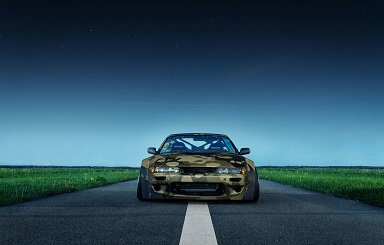
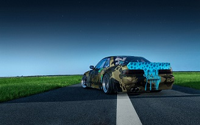
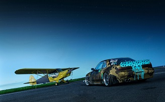

<hmtl>
	<head>
		<meta charset="UTF-8">
		<title>	Silvia S15</title>
		<link href="css/silvia.css" type= "text/css" rel="StyleSheet">
	</head>

	<body>
		
		<center>
		<h3>Silvia S15</h3>
		Este tem vários modelos como o S11, S12, S13, S14 e S15, mas hoje irei falar do S15 um dos mais utilizados hoje em dia no mundo do JDM principalmente no drift,<br> o carro de 1999 vinha com um motor de 250Cv com um turbo de rolamentos.
		</center>
		
		<ul>
		<li>       
		<li>
		<li>
		</ul><br>

			<center>
			<video controls="controls" width=800px>
				<source src="V/s15.mp4" type"video/mp4">
			</video><c/center>

			<p>Clique <a href="lista.html" target="_blank">aqui</a>para se rederecionado para a lista.
	</body>


</html>